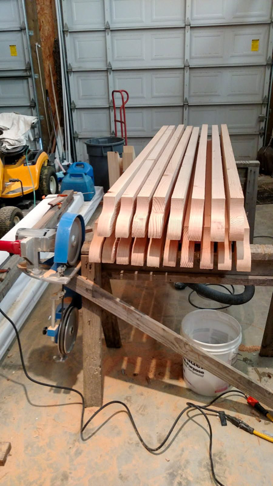

Family-owned General Contractor
Need help with repairs, updates, or small home projects that have been sitting on your to-do list? Kile Construction provides handyman services in Coeur d'Alene and surrounding areas for homeowners who want experienced help from a contractor who actually knows homes.
From drywall repairs and trim work to doors, windows, fixture swaps, TV mounting, and general home fixes, we handle a wide range of jobs with professionalism and attention to detail.


A lot of companies only want large remodels. A lot of handyman services only handle the most basic tasks. Kile Construction offers something better. We bring decades of construction and remodeling experience to smaller jobs, which means you get better workmanship, better judgment, and better results.
If you are a homeowner dealing with little repairs, aging finishes, damaged trim, worn doors, or a list of minor updates you want done right, this is exactly the kind of work we can help with.
Our handyman services are a great fit for homeowners who:

Norm Kile has spent decades in construction, remodeling, and home improvement. That kind of experience matters when you are working in lived-in homes where every job is a little different. We know how to assess the situation, recommend the right fix, and do the work with care.
We also know that handyman work is not just about checking boxes. Homeowners want someone who communicates clearly, shows up, respects the home, and does the work right the first time. That is exactly what we aim to provide.